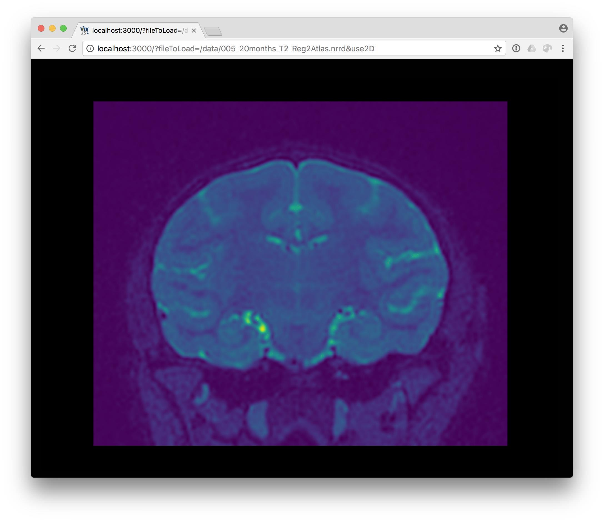

ITK/VTK Image Viewer can be used as a command line tool for opening and visualizing your local data file.
Installation
First of all, you will need to install the tool on you system which will require Node.js.
Assumming your environment already has node, you should be able to run the following command line.
|
The command line will install globally the application which should enable a new command line:
|
Usage
Listed above are the various options available, but below are commonly used commands:
Quick start
Start a server on default port without automatically opening a browser and sharing your local ~/itk-data directory as /data.
This allow to visualize file on the local file system via a given URL:
http://10.21.3.245:3000/?fileToLoad=/data/005_20months_T2_Reg2Atlas.nrrd
|
Drag and drop viewer
|

Force 2D viewer
To force the 2D viewer on 3D dataset, just add ?use2D at the end of the URL.
